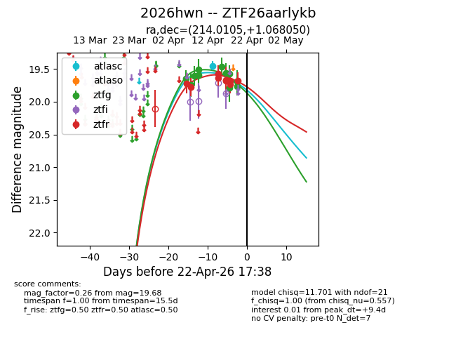
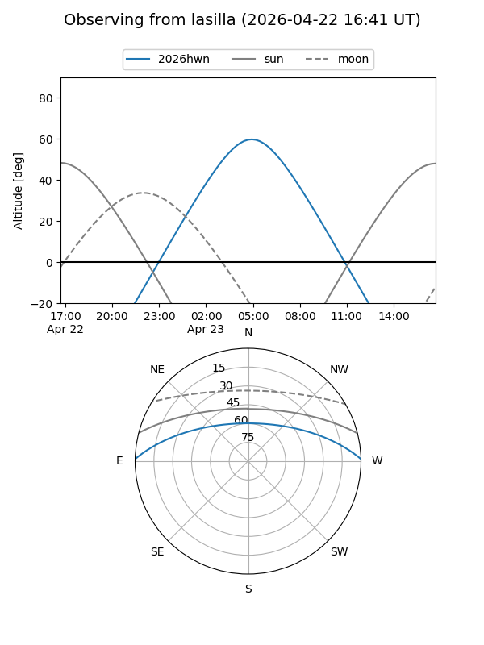
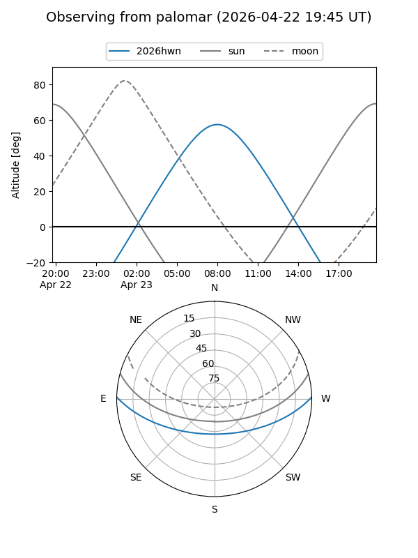
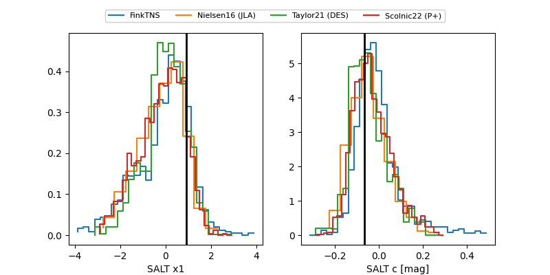

2026hwn
Target 2026hwn at 2026-04-22 17:39
Aliases and brokers:
FINK: link
Lasair: link
ALeRCE: link
TNS: link
YSE: link
alt names
ZTF26aarlykb (ztf,fink_ztf)
2026hwn (tns,yse)
Coordinates:
equatorial (ra, dec) = 214.0105,+1.06805
equatorial (HMS+DMS) = 14:16:02.51,+01:04:04.98
galactic (l, b) = (344.3740,+56.97021)
Flags:
Photometry:
last atlasc=19.45, ztfg=19.76, ztfr=19.68
1 atlasc, 11 ztfg, 9 ztfr detections
Lightcurve

Visibility


Additional plots
